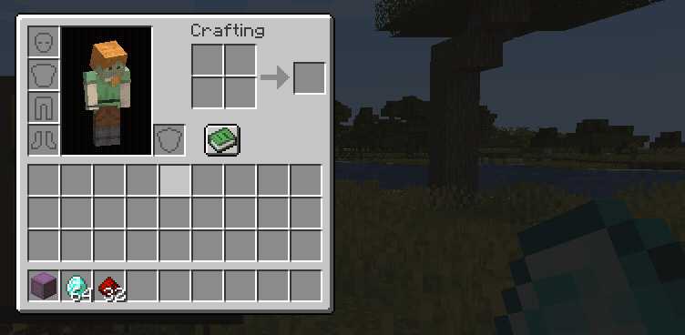
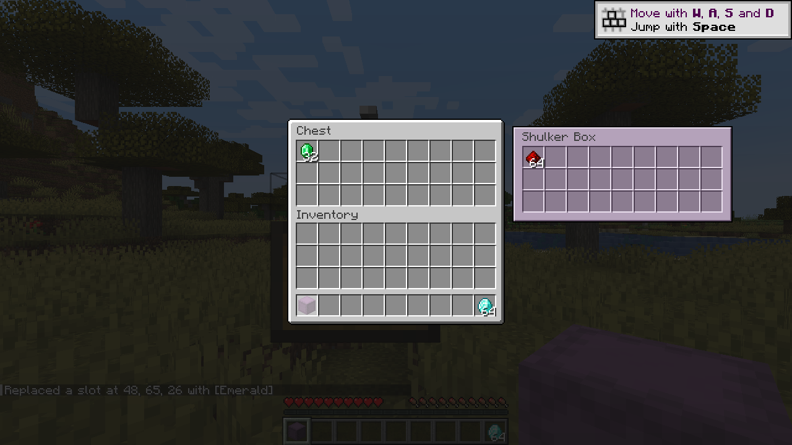
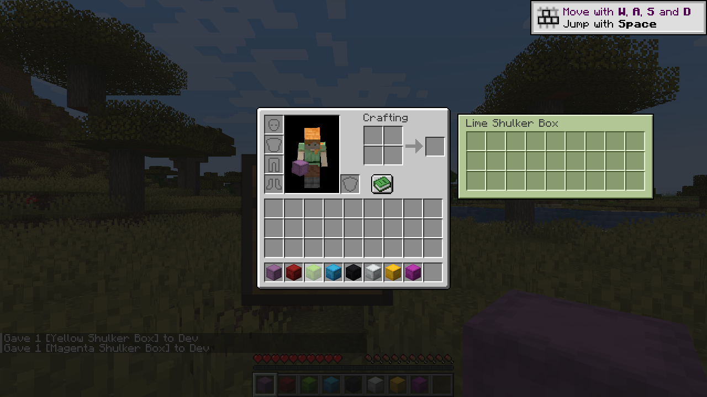

Hover a shulker box. Reach into it. Never place it down again.
Hover the box, drag straight into the grid, shift-click straight back out. The box never leaves the inventory.

Left-click, right-click, shift-click, drag-distribute, double-click-collect and hotbar swap all work — because the grid's cells are real inventory slots, not a custom widget.
The panel stays put while you move toward it and never closes while you're carrying an item. Escape closes the grid without closing the screen.
The panel takes the dye colour of the box you're looking into, so a wall of shulkers stays legible at a glance.


The honest version, because it affects how you install it.
Vanilla Minecraft has no packet for moving an item inside a shulker box that is itself sitting in an inventory. A client-only mod can show you the contents, but any move it makes is a lie the next server sync erases.
So Reach-In ships on both sides and is required on both. Every move is applied and validated by the server.
Drop the jar in the mods folder — on the client and the server.
reachin-0.1.0.jar in your client's mods folder.mods folder. A client-only install won't connect; a server-only install does nothing.| Item | Version |
|---|---|
| Minecraft | 1.21.1 |
| Loader | NeoForge 21.1.x |
| Sides | Client and server, both required |
| Java | 21 |
No Gradle. NeoForge 21.1 runs on Mojang mappings, so javac and jar are the whole toolchain.
git clone https://github.com/jimbobjunior1234567891011-crypto/Reach-In
cd Reach-In
.\build.ps1While the grid is open, the shulker's own tooltip is suppressed so it doesn't cover the panel. That also hides Shulker Box Tooltip's preview, which renders through the same pipeline, so the two never stack. Keep it installed or don't — either works.